NO. 103 · sightedlogged 2026
BENEATH THE SURFACE
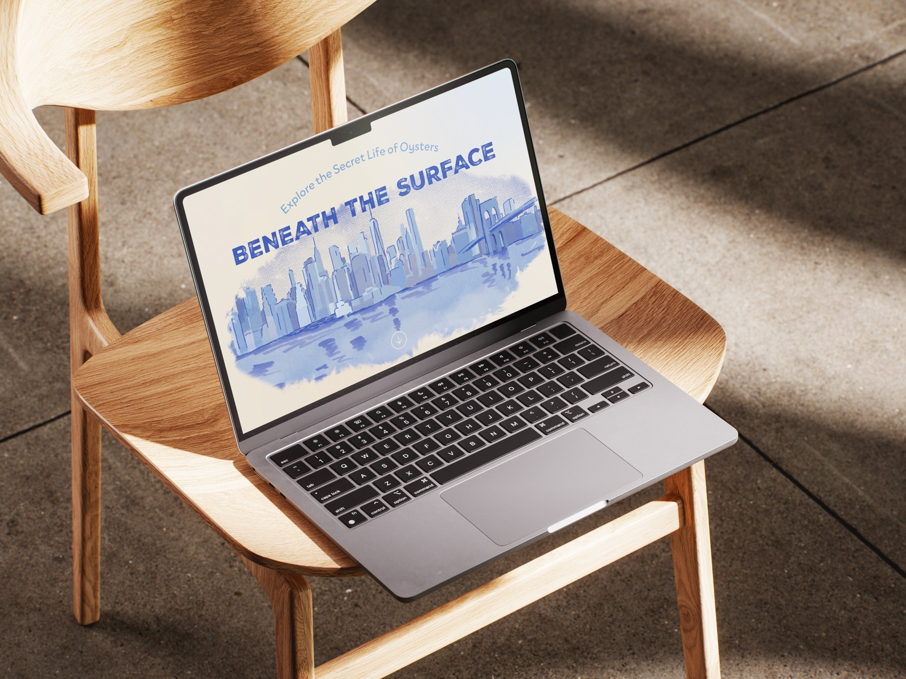
The whole story: research, iterations and all.The short version, in five stops.
OVERVIEW
An interactive informational website exploring the ecological importance of oysters and the role they play in healthy marine ecosystems.
- Project
- Beneath the Surface
- Type
- UI / Interactive Website / Educational Experience
- Role
- Research, UX/UI, Visual Design
- Tools
- Figma, Illustrator, After Effects, Procreate
- Timeline
- 11 weeks
THE CHALLENGE
Oysters are often thought of primarily as a food source, while their larger ecological role is less understood. I wanted to create an experience that could make this information approachable and engaging, particularly for younger audiences.
APPROACH
- Problem
- Oysters are often thought of primarily as a food source, while their larger ecological role is less understood.
- Audience
- Younger audiences, who need the information to feel approachable and engaging.
- Design decisions
-
Learn by doing
The site unfolds as a story, and interaction is how visitors move through it: pulling an oyster from the reef, tapping hotspots, resurfacing to continue. Hands-on discovery keeps a younger audience engaged.
Let the illustrations lead
I kept the type and interface elements quiet and simple, so the illustrations and the information stand out.
Don’t talk down
I avoided bright, heavily saturated colors so the design reads as thoughtful rather than childish. Younger audiences deserve real information, presented with care.
Make it local
Setting the story in New York Harbor, with Manhattan in the background, shows that this ecosystem is right where the audience lives.
RESEARCH
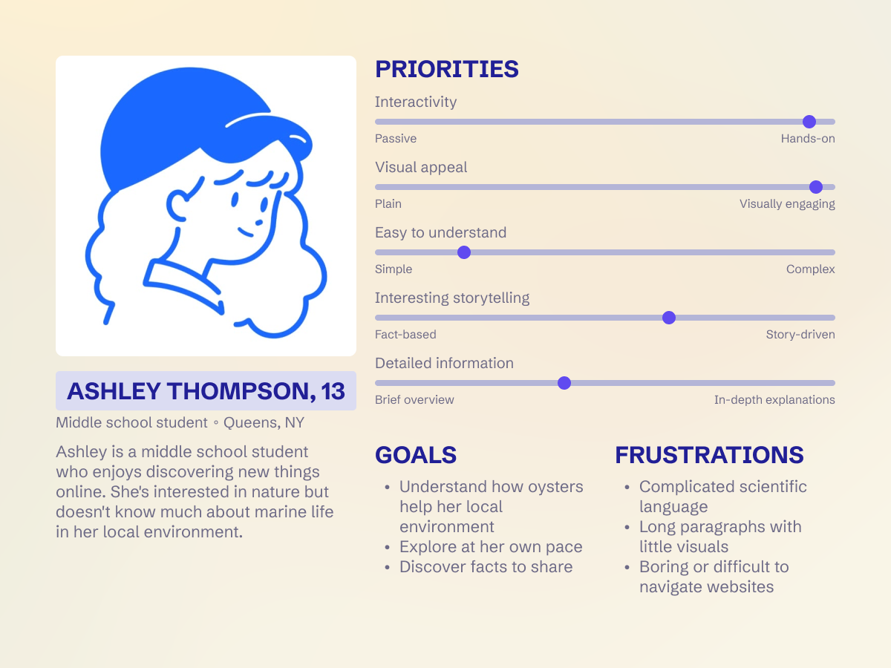
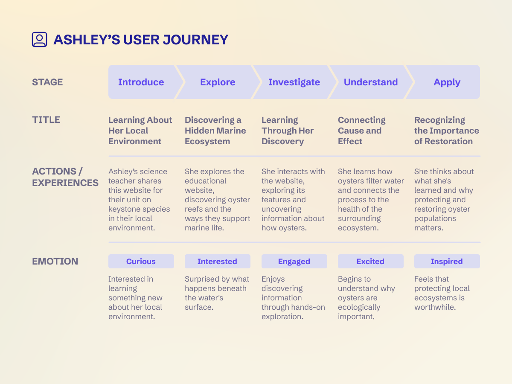
DESIGN DECISIONS
Learn by doing
The site unfolds as a story, and interaction is how visitors move through it: pulling an oyster from the reef, tapping hotspots, resurfacing to continue. Hands-on discovery keeps a younger audience engaged.
Let the illustrations lead
I kept the type and interface elements quiet and simple, so the illustrations and the information stand out.
Don’t talk down
I avoided bright, heavily saturated colors so the design reads as thoughtful rather than childish. Younger audiences deserve real information, presented with care.
Make it local
Setting the story in New York Harbor, with Manhattan in the background, shows that this ecosystem is right where the audience lives.
ITERATION
Grayscale wireframes: layout, hierarchy and the photo-based oyster.
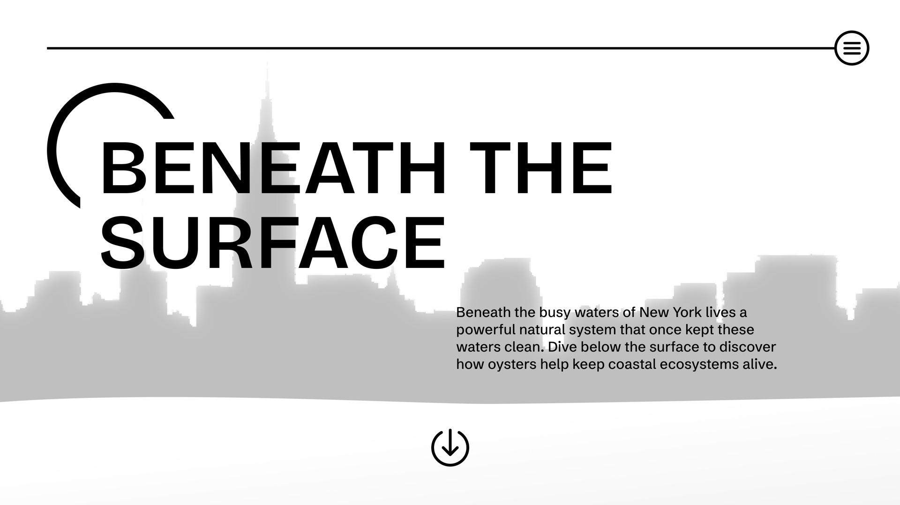
I included a menu button from the start to make navigation easier and to ground the design in one consistent element.
A straightforward introduction tells visitors exactly what the site is about and what they’ll find inside.
I knew I wanted Manhattan in the background to give the project context and show that it’s anchored in reality: this is happening right where we live.
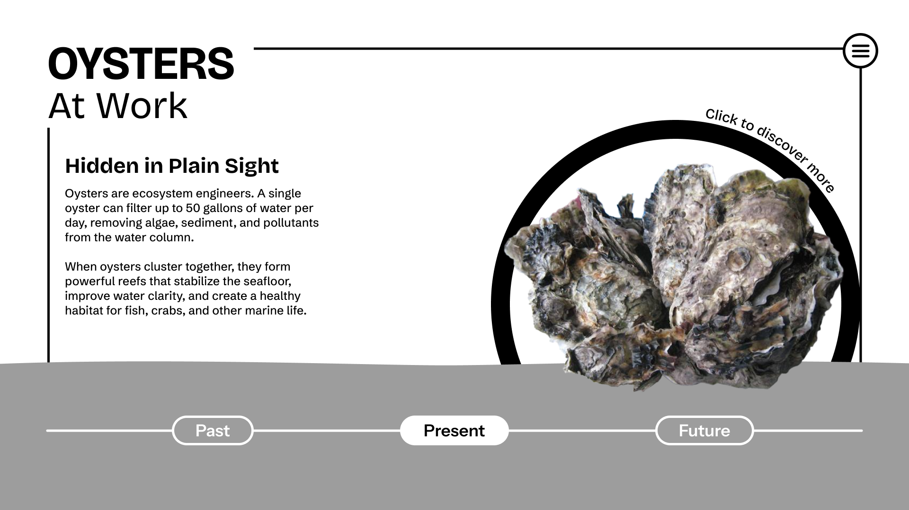
Body text that sums up the many ways oysters protect their environment.
I wanted to include a 3D model of an oyster cluster that visitors could explore and interact with.
Originally, I planned a timeline showing how New York Harbor’s oyster population has declined and what restoration could look like in the future.
First color pass: illustrated New York harbor, purple palette and handwritten type.
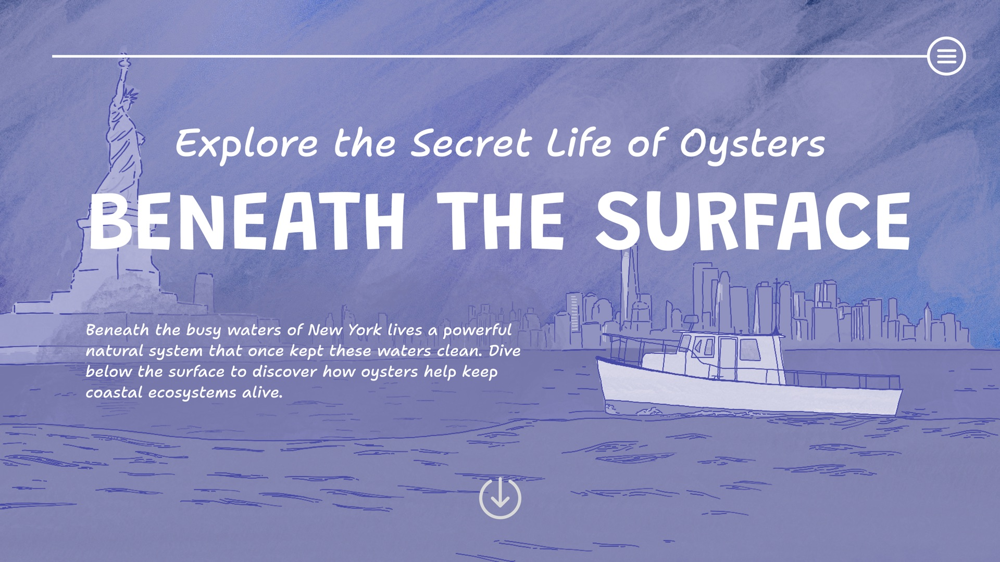
A new tagline explains the subject of the site, giving context to an otherwise vague title.
The new illustration makes the setting clear, but it feels muddled and doesn’t spark immediate interest.
The new typeface is handwritten, with a strongly illustrative quality.
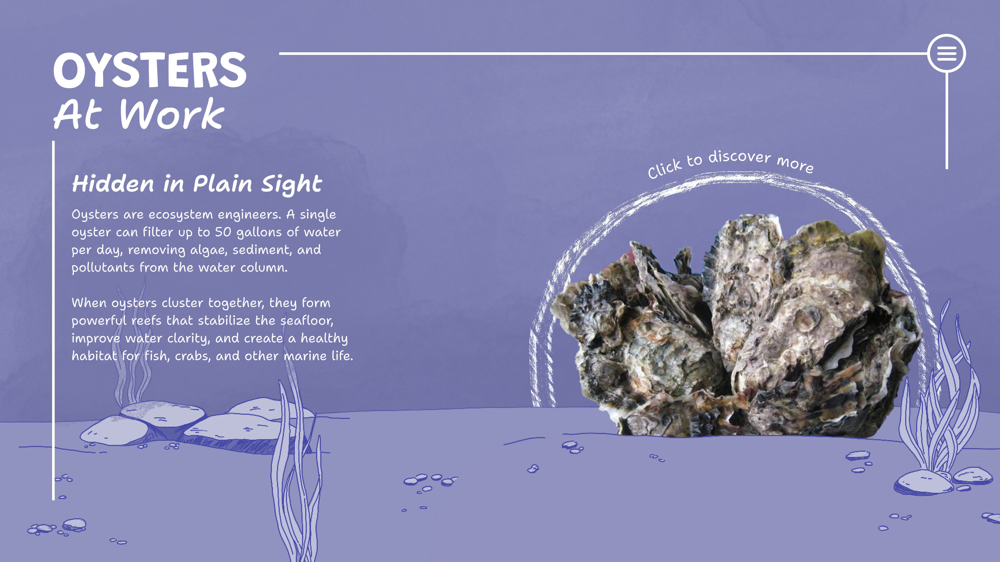
I kept the framing container from the first version to anchor the design.
The hand-drawn arc and lettering lean further into an illustrative feel.
I started treating the oyster photo as a placeholder for an illustrated cluster.
The illustrated seafloor is a good addition, but it blends into the background too much.
Painterly direction: watercolor skyline, warm gradient and an open, illustrated layout.
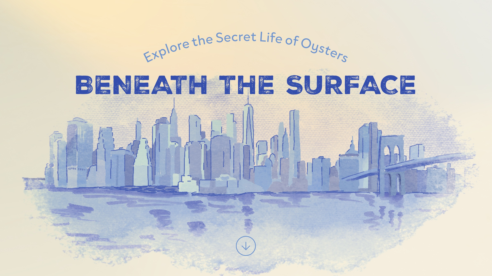
The title and tagline no longer compete for attention.
The new display type feels handcrafted and clean at the same time, balanced by a geometric sans serif.
The new illustrated background feels far less muddled, leaning into watercolor instead of colored pencil.
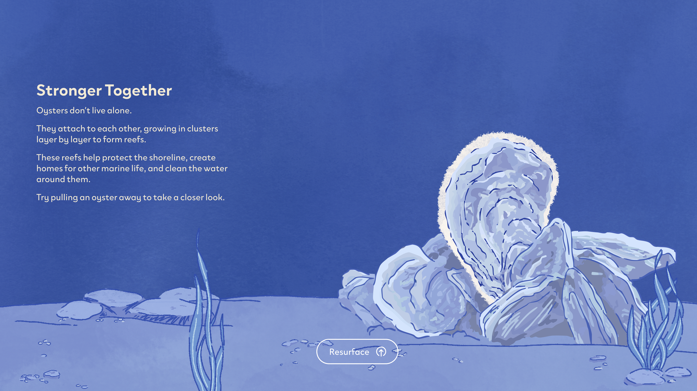
I removed the restrictive framing lines, letting each page float gently in space.
Subtle visual cues show visitors how to interact with each page and move through the site.
The text now focuses on a single topic, with language tailored to a younger audience.
A new button makes it easier to move between pages.
EXPERIENCE
FINAL UIFINAL
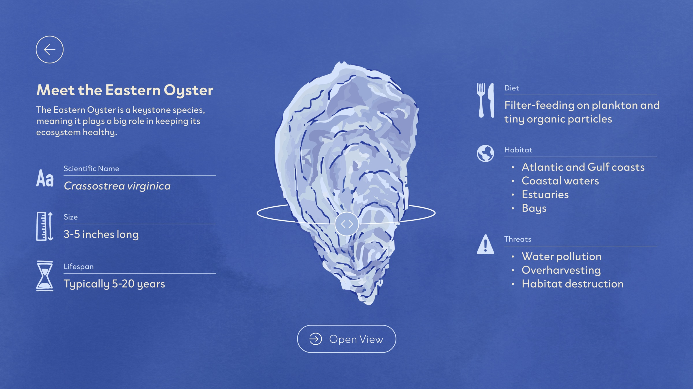
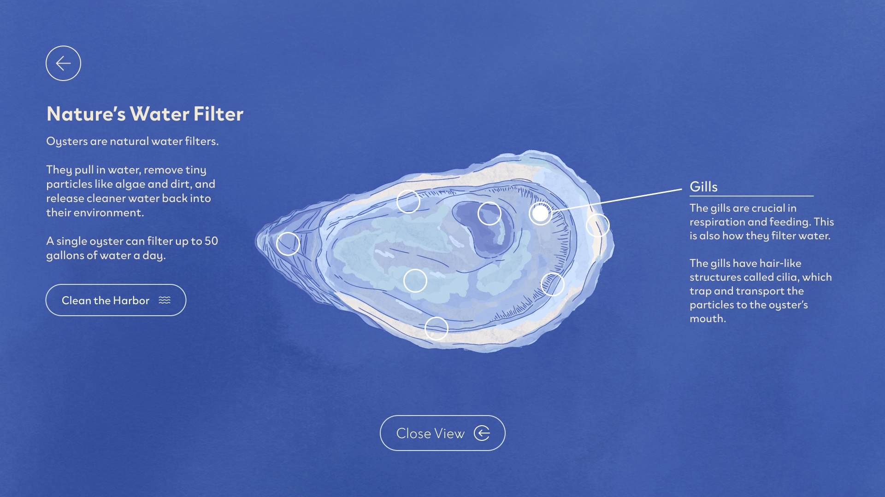
REFLECTION
This project pushed me to think beyond designing individual screens and consider how information can become an experience. I learned how visual hierarchy, interaction, and storytelling can work together to make complex environmental information more approachable.